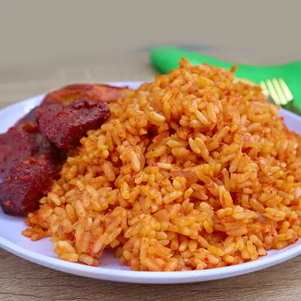

A flavorful West African rice dish cooked in a rich tomato sauce.
Prep Time: 15 minutes
Cook Time: 50 minutes
Servings: 6 people
Difficulty: Medium

Use long-grain parboiled rice for best results.
Avoid stirring too often to prevent mushy rice.
Let the rice steam on low heat for a smoky flavor.
Calories: 350 kcal
Carbohydrates: 55g
Protein: 8g
Fat: 10g